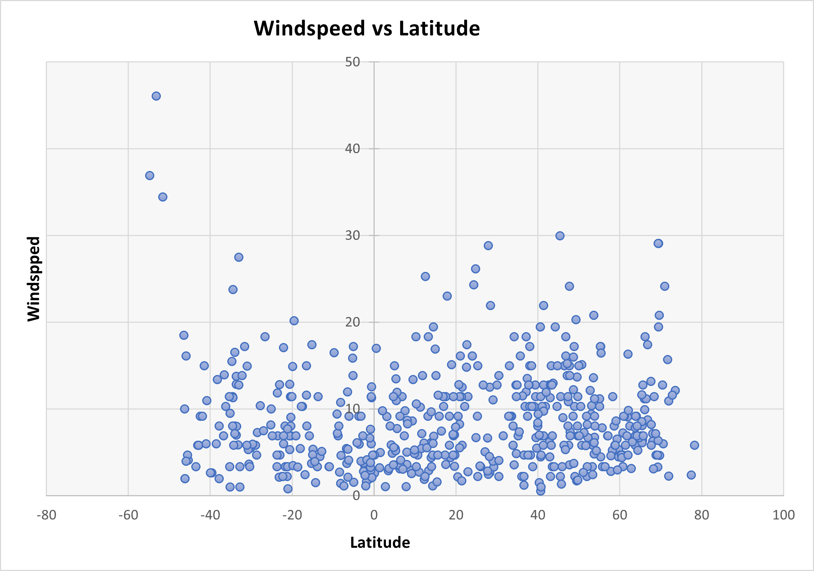

What is Wind Speed?
Wind is defined as the movement of air in any direction. The speed of wind varies from calm to very high speeds. Wind is created when air moves from areas of high pressure toward areas where the air pressure is low. Seasonal temperature changes and the Earth’s rotation also affect wind speed and direction. The Beaufort Scale is used to classify wind speeds from calm and light breezes to gale and hurricane level sustained winds. The following chart depicts the wind speed of various cities by their latitude.
